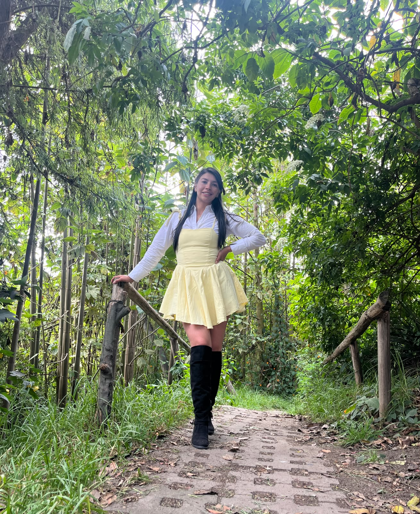

Hola, soy Caroll. Capturo la esencia, la luz y la memoria de tus instantes.

Mi Filosofía
Creo firmemente que la fotografía no se trata simplemente de congelar un segundo en el tiempo, sino de encapsular la atmósfera, las emociones y la historia invisible que ocurre en cada espacio. Mi enfoque se centra en la luz natural, la sutileza de los detalles cotidianos y la espontaneidad.

El Enfoque Técnico y Humano
Con años de experiencia en el sector visual, he fusionado la precisión técnica del diseño con la sensibilidad orgánica de la fotografía. Ya sea una boda íntima, una sesión de artes escénicas o un proyecto gastronómico, mi meta es crear composiciones atemporales y honestas.
Autenticidad
Evito las poses forzadas. Busco la verdad del momento.
Dirección de Arte
Cada encuadre, color y sombra tiene un propósito narrativo.
Atención al Detalle
Las texturas, la luz suave y los pequeños gestos lo son todo.